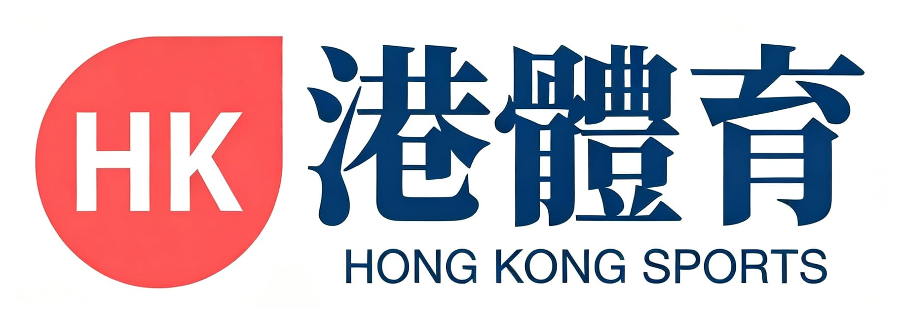

rugby2026-10-02 16:01 · 星島體育
名古屋亞運｜港男七欖50：0大炒馬來西亞入四強 挑戰三連霸創港隊歷史
香港男子七人欖球隊在名古屋亞運八強戰以50：0大炒馬來西亞，全場八次達陣未失一球，輕鬆晉級四強。港隊同日較早時在分組賽尾輪以22：0大勝國家隊，三戰全勝、攻入115分零失球，首名出線。港隊將於周六早上四強鬥南韓，爭入傍晚金牌戰；若成功奪金，將成為港隊史上首位在亞運同一項目連續三屆奪冠的運動員或隊伍。

香港男子七人欖球隊在名古屋亞運八強戰以50：0大炒馬來西亞，全場八次達陣未失一球，輕鬆晉級四強。港隊同日較早時在分組賽尾輪以22：0大勝國家隊，三戰全勝、攻入115分零失球，首名出線。港隊將於周六早上四強鬥南韓，爭入傍晚金牌戰；若成功奪金，將成為港隊史上首位在亞運同一項目連續三屆奪冠的運動員或隊伍。